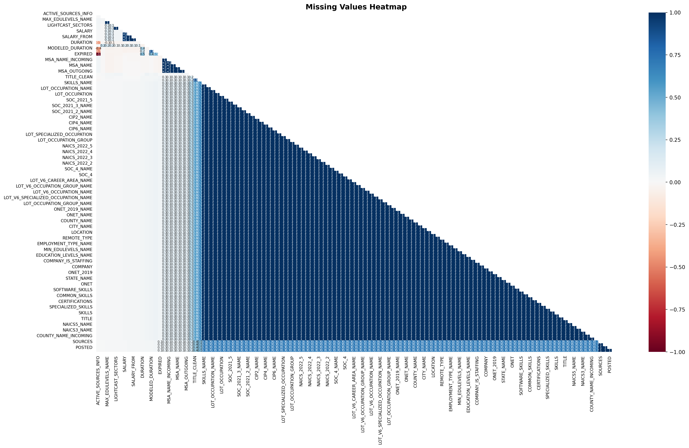
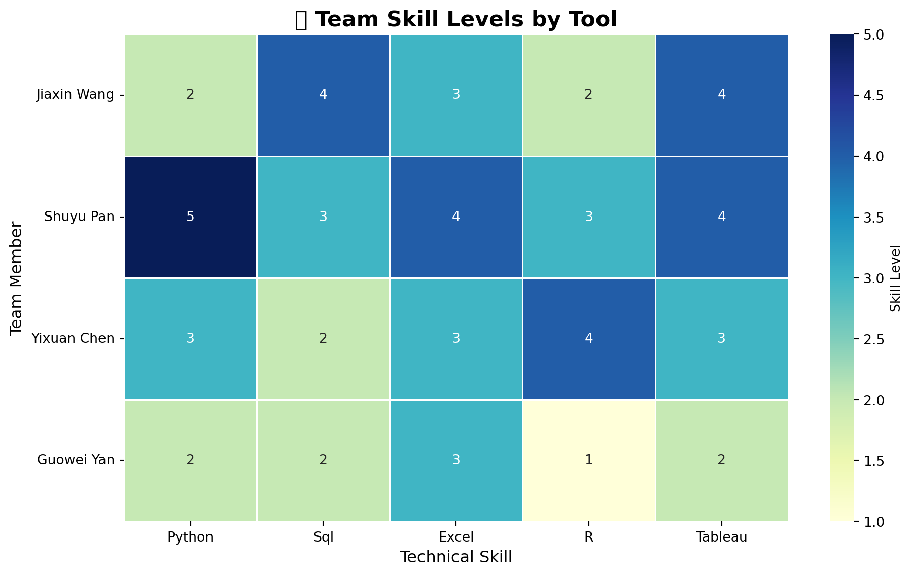
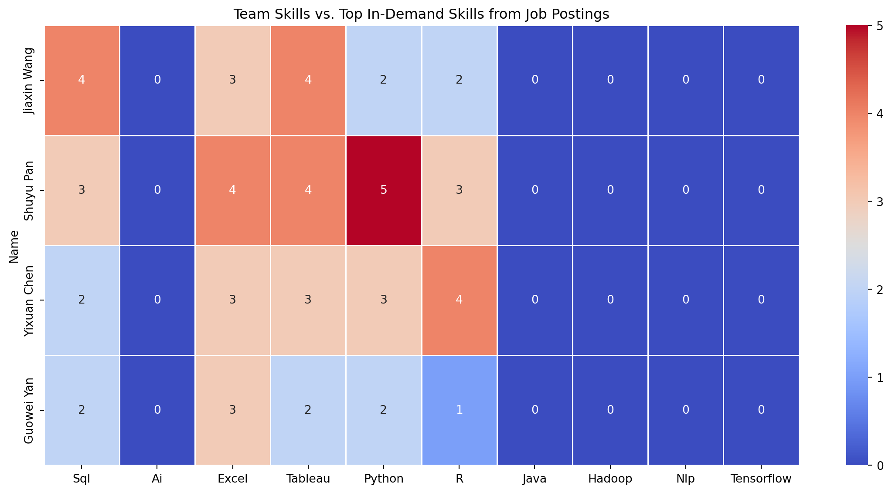
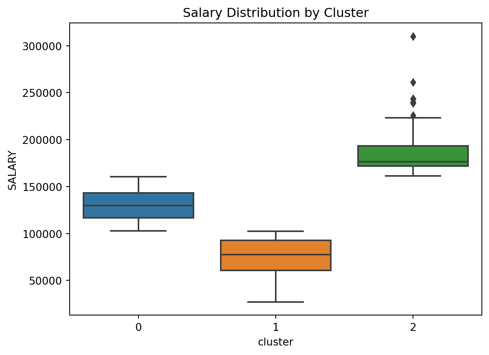

import pandas as pd
import missingno as msno
import matplotlib.pyplot as plt
import warnings
import numpy as np
import warnings
import plotly.express as px
from collections import Counter
import re
import plotly.io as pio
import plotly.graph_objects as go
from ipywidgets import Dropdown, VBox, OutputData Analysis
Comprehensive Data Cleaning & Exploratory Analysis of Job Market Trends
title: “Business Analytics, Data Science, and ML Trends in 2024” author: “Team 7: Shuyu Pan, Jiaxin Wang, Yixuan Chen, Guowei Yan” date: “2025-02-14” format: html bibliography: ./references.bib csl: ./csl/econometrica.csl toc: true
Introduction & Research Rationale
Why is this topic important?
In today’s digital economy, Business Analytics, Data Science, and Machine Learning play a critical role in decision-making, automation, and innovation across industries. For business Analytic, we know that companies use analytics and data science to extract insights from vast amounts of data, leading to better strategic decisions and operational efficiency. For machine learning Trends, Machine Learning (ML) is rapidly evolving, shaping industries and driving innovation. Understanding ML trends is crucial because it helps businesses and professionals stay ahead, remain competitive, and leverage emerging technologies effectively. By exploring this topic, will be very helpful for our future job search.
What trends make this a crucial area of study in 2024?
In 2024, Business Analytics, Data Science, and Machine Learning are evolving rapidly, driven by key trends that make them crucial areas of study. Generative AI and Large Language Models (LLMs) are transforming automation and customer interactions, while Explainable AI (XAI) and Ethical AI ensure fairness and transparency in decision-making. AutoML and low-code/no-code AI are making machine learning more accessible, enabling businesses to leverage AI without deep technical expertise. Real-time data processing and Edge AI are enhancing speed and security, especially with IoT and 5G advancements. Additionally, AI-powered Business Intelligence (BI), personalized recommendation systems, and AI-driven cybersecurity are reshaping industries by improving efficiency, security, and user experience. Understanding these trends is essential for staying competitive, making informed business decisions, and preparing for the future job market.
What do you expect to find in your analysis?
In our analysis of Business Analytics, Data Science, and Machine Learning Trends, we expect to find that AI-driven automation and predictive analytics are becoming essential for decision-making across industries. Emerging technologies like Generative AI, AutoML, and Edge AI are gaining widespread adoption, making AI more accessible and efficient. Additionally, there is a growing focus on Ethical AI and Explainability, as businesses seek to mitigate bias and ensure fairness in machine learning models. The job market is also shifting, with increasing demand for professionals skilled in AI, Python, and data analytics. Furthermore, businesses are transitioning from traditional analytics to AI-powered Business Intelligence, improving efficiency, personalization, and customer experience (Li et al. (2021)). —
About
Most in-demand Skills for Data science, Business Analytics, and ML Roles Based on the study analyzing 786 job postings, the most in-demand skills for Data Science, Business Analytics, and Machine Learning roles can be categorized into technical skills, analytical skills, and soft skills. The study highlights that Excel (84%), Tableau (71%), SPSS (70%), Python (70%), and SQL (68%) are among the most frequently required tools, emphasizing the importance of data manipulation, analysis, and visualization. Additionally, Power BI (61%) and R (67%) remain valuable for business analytics and statistical modeling. Analytical skills such as data visualization (91%), data cleaning (88%), and data extraction (78%) are critical, demonstrating the need for professionals who can preprocess and interpret data effectively. Employers also seek candidates with experience in script programming (41%) and neural networks (18%), particularly for advanced machine learning roles. Beyond technical expertise, soft skills like communication (100%), problem-solving (92%), teamwork (91%), and presentation abilities (79%) are equally vital. These skills help professionals convey insights to stakeholders and collaborate effectively. For business analysts, strong Excel, SQL, and storytelling skills are crucial, while data scientists and ML engineers require deep expertise in statistics, Python, and predictive modeling. The findings reinforce that a blend of technical proficiency and interpersonal skills is essential for career success.
Job Descriptions Evolved in 2024 to Require AI/ML Expertise Job descriptions in 2024 have evolved significantly to incorporate AI/ML expertise, reflecting the increasing integration of artificial intelligence in recruitment and workforce management. Companies are now utilizing AI-based recommender systems to match employee profiles with job roles, reducing human bias and improving efficiency in hiring and talent management. A key trend in job descriptions is the greater emphasis on AI and ML proficiency. Even for roles outside traditional tech fields, employers are prioritizing candidates with automation, predictive analytics, and AI-enhanced decision-making skills. Many organizations expect job applicants to have at least a foundational understanding of machine learning tools, data analysis, and cloud-based AI solutions. Another major shift is the use of AI-driven profile matching, where machine learning models assess historical performance, skills, and industry trends to suggest job candidates. AI is also helping reduce human bias in hiring by offering objective, data-driven recommendations. However, challenges remain, such as algorithmic fairness and ethical concerns in AI-driven recruitment. Additionally, job descriptions have become more personalized and dynamic, as AI enables real-time role adjustments based on employee potential and company needs. Overall, AI and ML expertise are now essential components of modern job descriptions, reflecting the digital transformation across industries.
The Future of Business Analytics: Demand, Skills, and Career Growth The career outlook for business analytics professionals is highly promising, driven by the increasing reliance on data-driven decision-making across industries. Organizations in finance, healthcare, retail, technology, and energy are actively seeking skilled analysts who can interpret complex data, develop predictive models, and provide actionable insights. With the rapid advancements in artificial intelligence and machine learning, professionals who can integrate these technologies into business strategies will be in high demand. Additionally, as companies prioritize efficiency, risk management, and customer experience, business analytics roles are expected to expand, offering competitive salaries and diverse career opportunities. Those who invest in upskilling in areas such as data visualization, forecasting, and AI-driven analytics will be well-positioned for success in this evolving job market.
Industries with the Highest Demand for Data Scientists and the Factors Driving Their Growth As of 2025, data scientists are in high demand across various industries, with technology (35%), financial services (22%), healthcare (18%), e-commerce (15%), and manufacturing/IoT (10%) leading the way. The technology sector dominates due to rapid advancements in artificial intelligence (AI) and machine learning (ML), requiring data scientists to develop and optimize predictive models. Financial institutions leverage data science for risk assessment, fraud detection, and algorithmic trading, ensuring efficient decision-making and regulatory compliance. In healthcare, the integration of AI in patient diagnosis, drug discovery, and medical imaging has significantly increased the need for data analytics professionals. E-commerce and retail businesses rely on data-driven insights to enhance customer experiences, optimize inventory, and implement dynamic pricing strategies. Meanwhile, manufacturing and IoT use predictive analytics to improve operational efficiency, reduce downtime, and enhance automation. The surge in AI adoption, automation, and big data analytics across industries is driving this demand, making data science a critical and highly sought-after profession in the modern workforce. Companies increasingly recognize the value of data-driven decision-making, ensuring that data scientists remain at the forefront of innovation and business transformation.
Research & Literature Review
The Role of Monetary Policy in Economic Growth
The literature on monetary policy and economic growth highlights the crucial role of central banks in influencing macroeconomic stability. Research emphasizes various transmission mechanisms, including interest rates, credit supply, and market expectations, through which policy decisions impact investment, consumption, and overall economic performance. Studies also explore the varying effectiveness of monetary policies across different economic contexts, with factors such as financial market development and institutional credibility playing a significant role (Pradhan).
However, implementing monetary policy is not without challenges. Scholars discuss issues such as time lags in policy effects, constraints like the zero-lower bound on interest rates, and trade-offs between inflation control and economic expansion. The existing research underscores the complexity of monetary policy, suggesting that its success depends on well-calibrated, context-specific strategies to balance economic growth and stability.
Data Analytics Skills and Industry Expectations
The literature on data analytics skills and industry expectations highlights the growing demand for professionals who possess a mix of technical and soft skills to meet market needs. The study in the Information Systems Education Journal (2024) analyzes 786 job postings to identify the most sought-after competencies for data analytics positions. The findings indicate that soft skills, particularly communication, teamwork, and problem-solving, dominate employer preferences, with 11 out of the top 21 desired skills falling under this category. In addition, domain-related skills, such as data visualization, data cleaning, and data extraction, are critical, along with programming knowledge in languages like Python and SQL. This suggests that higher education curricula must evolve to balance technical and interpersonal skill development to enhance graduate employability.
Prior research supports this perspective, emphasizing that university programs must align with industry expectations to ensure strong career placement for graduates. Studies have traditionally used job postings as a key method to analyze shifting industry demands, demonstrating an increasing focus on data analysis, statistical modeling, and AI-driven techniques (Brooks et al., 2018). Additionally, the literature stresses the importance of continuous skill adaptation, as new trends, such as automation and AI integration, reshape employer requirements. As industries generate vast amounts of data, projected to reach 181 zettabytes by 2025, the ability to manage and extract insights from this data becomes a crucial competency. This reinforces the need for dynamic, industry-relevant educational programs that equip students with both technical expertise and essential workplace competencies.
Forecast evaluation for data scientists: common pitfalls and best practices
The literature on forecast evaluation for data scientists highlights the growing use of machine learning and deep learning techniques in time-series forecasting. While these models offer powerful predictive capabilities, their evaluation often lacks the rigor of traditional statistical methods. Many machine learning researchers adopt flawed evaluation practices, leading to misleading conclusions about model performance. Key challenges include dealing with non-stationarities in time-series data, selecting appropriate validation strategies, and ensuring that error measures accurately reflect forecasting accuracy. Studies emphasize that improper benchmarking, such as using inadequate comparison models or inappropriate error metrics like MAPE on small-value datasets, can distort results and overstate the effectiveness of certain methods ().
To improve forecast evaluation, recent research advocates for more structured methodologies that align with best practices in both machine learning and traditional econometrics. Choosing appropriate data partitioning techniques, selecting meaningful error measures, and benchmarking against simple yet robust models like the naïve forecast are critical steps in ensuring reliable performance assessment. Additionally, industry-specific considerations, such as the high volatility of financial and energy sector data, further complicate evaluation methods. The lack of universally accepted standards has led to inconsistencies in published research, reinforcing the need to bridge the gap between machine learning and classical forecasting principles to enhance model evaluation and reliability (Hewamalage, Ackermann, and Bergmeir ((2023))).
lightcast_data = pd.read_csv("lightcast_job_postings.csv")
columns_to_drop = [
"ID", "URL", "ACTIVE_URLS", "DUPLICATES", "LAST_UPDATED_TIMESTAMP",
"NAICS2", "NAICS3", "NAICS4", "NAICS5", "NAICS6",
"SOC_2", "SOC_3", "SOC_5"
]
lightcast_data.drop(columns=columns_to_drop, inplace=True)/var/folders/1s/0kz43lv50zzcywvpxqbzqz380000gn/T/ipykernel_29333/2811029010.py:1: DtypeWarning:
Columns (19,30) have mixed types. Specify dtype option on import or set low_memory=False.
Which columns are irrelevant or redundant?
The removed columns include unique identifiers (such as ID), timestamps (LAST_UPDATED_TIMESTAMP), links (URL), duplicate markers (DUPLICATES), and overlydetailed industry and occupation classification codes (various levels of NAICS and SOC). These columns may have no direct impact on the analysis or be redundant, so they were removed to simplify data processing.
Why are we removing multiple versions of NAICS/SOC codes?
The main reason for removing multiple versions of NAICS/SOC codes is to avoid data redundancy and confusion, ensuring data consistency and comparability. Different versions of NAICS may lead to inconsistencies in industry classification standards, which can affect the accuracy of data analysis.
How will this improve analysis?
Removing multiple versions of NAIC/SOC codes can improve data consistency and comparability, preventing analysis inaccuracies caused by inconsistent industry classification standards. This helps reduce data redundancy, simplify data cleaning and processing, and minimize classification errors due to version differences,making the data more standardized and enhancing the quality and reliability of data analysis.
4.4 Handle Missing Values**
How should we handle missing values?
- Removing Missing Values (Dropping Data) If missing values are rare and their removal won’t significantly impact the analysis, dropping them is a simple and effective solution. This can be done by removing rows containing missing values if they make up a small percentage of the dataset. Alternatively, if an entire column has a large proportion of missing values, it may be best to drop the column entirely.
- Filling Missing Values (Imputation) Imputation involves replacing missing values with a calculated or default value. For numerical data, common methods include filling missing values with the median (to handle skewed distributions), the mean (if the data is normally distributed), or the mode (if there is a frequently occurring value). For categorical data, missing values can be replaced with “Unknown” to retain information or with the mode if a dominant category exists. This method preserves the dataset’s size and can prevent loss of valuable information.
plt.figure(figsize=(12, 10))
msno.heatmap(lightcast_data,
fontsize=8,
sort='ascending')
plt.title("Missing Values Heatmap", fontsize=14, fontweight='bold')
plt.xticks(rotation=90, ha='center')
plt.yticks(rotation=0)
plt.tight_layout()
plt.show()<Figure size 1152x960 with 0 Axes>
identify numerical and categorical columns
lightcast_data.head()
# Identify numerical columns
numerical_columns = lightcast_data.select_dtypes(include=['number']).columns
# Identify categorical columns
categorical_columns = lightcast_data.select_dtypes(include=['object', 'category']).columns# Find columns with missing values
missing_values = lightcast_data.isnull().sum()
# Filter only columns with missing data
missing_columns = missing_values[missing_values > 0]
# Display columns with missing values and their count
print(missing_columns)LAST_UPDATED_DATE 22
POSTED 22
EXPIRED 7844
DURATION 27316
SOURCE_TYPES 22
...
NAICS_2022_4_NAME 44
NAICS_2022_5 44
NAICS_2022_5_NAME 44
NAICS_2022_6 44
NAICS_2022_6_NAME 44
Length: 118, dtype: int64Numerical fields (e.g., Salary) are filled with the median.
warnings.simplefilter(action='ignore', category=FutureWarning)
# Iterate over columns with missing values
for col in missing_columns.index:
if col in numerical_columns:
# If numeric, replace missing values with the median
lightcast_data[col].fillna(lightcast_data[col].median(), inplace=True)
elif col in categorical_columns:
# If categorical, replace missing values with "Unknown"
lightcast_data[col].fillna("Unknown", inplace=True)
# Verify if missing values are handled
print(lightcast_data.isnull().sum()) # Should return 0 for all columnsLAST_UPDATED_DATE 0
POSTED 0
EXPIRED 0
DURATION 0
SOURCE_TYPES 0
..
NAICS_2022_4_NAME 0
NAICS_2022_5 0
NAICS_2022_5_NAME 0
NAICS_2022_6 0
NAICS_2022_6_NAME 0
Length: 118, dtype: int64Drop columns with >50% missing values
lightcast_data.dropna(thresh=len(lightcast_data) * 0.5, axis=1, inplace=True)Remove Duplicates
lightcast_data = lightcast_data.drop_duplicates(subset=["TITLE", "COMPANY", "LOCATION", "POSTED"], keep="first")df = pd.DataFrame(lightcast_data)
skills_keywords = [
"Python", "SQL", "Machine Learning", "Deep Learning", "AI", "TensorFlow", "PyTorch",
"Excel", "Tableau", "Power BI", "NLP", "Big Data", "Hadoop", "R", "Java", "C++"
]
skill_counts = Counter()
for desc in df["BODY"].dropna():
words = re.findall(r'\b\w+\b', desc)
matched_skills = [word for word in words if word in skills_keywords]
skill_counts.update(matched_skills)
skills_df = pd.DataFrame(skill_counts.items(), columns=["Skill", "Count"]).sort_values(by="Count", ascending=False)
skills_df.to_csv("skill_counts_from_job_postings.csv", index=False)
fig1 = px.bar(
skills_df,
x="Skill",
y="Count",
title="Most In-Demand Skills in Data Science and Analytics Jobs",
labels={"Skill": "Skills", "Count": "Frequency"},
text=skills_df["Count"]
)
pio.renderers.default = "iframe"
fig1.write_html("plotly_skills_chart.html")
fig1.show()The histogram highlights the most in-demand skills in Business Analytics, Data Science, and AI/ML roles. SQL, AI, and Excel rank as the top skills, followed by Python, Tableau, and R, indicating the growing need for data manipulation, automation, and visualization expertise.
To build a successful career, start by mastering SQL, Python, and Excel, as these are fundamental for data analysis and business intelligence. Certifications such as Google Data Analytics, Microsoft Power BI, or AWS Data Analytics can provide an edge in the job market. Tableau and R are crucial for visualization and statistical modeling, while AI and Machine Learning skills open doors to automation and predictive analytics.
In the short term, focus on online courses and projects to develop practical experience. Mid-term goals should include real-world applications, internships, and industry certifications. Long-term, professionals should aim for specialization in areas such as AI-driven analytics, NLP, and cloud-based data solutions to qualify for high-paying roles. Career opportunities include Data Analyst, Business Intelligence Specialist, Machine Learning Engineer, and AI Researcher, with increasing demand in finance, healthcare, and e-commerce.
import plotly.express as px
ai_keywords = [
"Data Scientist", "Machine Learning Engineer", "Artificial Intelligence", "Deep Learning Engineer",
"Computer Vision Engineer", "Natural Language Processing", "AI Researcher", "AI Engineer",
"AI Consultant", "AI Specialist", "AI Analyst", "Generative AI", "Predictive Analytics",
"Cognitive Computing", "Data Analytics Engineer", "Data Modeler", "Data Governance Analyst",
"Business Intelligence Analyst", "Big Data Engineer", "Enterprise Architect",
"Solutions Architect", "Enterprise Solutions Architect", "Data Quality Analyst",
"Data Management Analyst", "Lead Data Analyst", "Principal Architect", "Data and Reporting Analyst"
]
df["IS_AI_JOB"] = df["TITLE_NAME"].astype(str).apply(lambda x: any(keyword in x for keyword in ai_keywords))
state_job_counts = df[df["IS_AI_JOB"]].groupby("STATE_NAME").size().reset_index(name="AI_JOB_COUNT")
state_abbrev = {
"Alabama": "AL", "Alaska": "AK", "Arizona": "AZ", "Arkansas": "AR", "California": "CA",
"Colorado": "CO", "Connecticut": "CT", "Delaware": "DE", "Florida": "FL", "Georgia": "GA",
"Hawaii": "HI", "Idaho": "ID", "Illinois": "IL", "Indiana": "IN", "Iowa": "IA", "Kansas": "KS",
"Kentucky": "KY", "Louisiana": "LA", "Maine": "ME", "Maryland": "MD", "Massachusetts": "MA",
"Michigan": "MI", "Minnesota": "MN", "Mississippi": "MS", "Missouri": "MO", "Montana": "MT",
"Nebraska": "NE", "Nevada": "NV", "New Hampshire": "NH", "New Jersey": "NJ", "New Mexico": "NM",
"New York": "NY", "North Carolina": "NC", "North Dakota": "ND", "Ohio": "OH", "Oklahoma": "OK",
"Oregon": "OR", "Pennsylvania": "PA", "Rhode Island": "RI", "South Carolina": "SC", "South Dakota": "SD",
"Tennessee": "TN", "Texas": "TX", "Utah": "UT", "Vermont": "VT", "Virginia": "VA",
"Washington": "WA", "West Virginia": "WV", "Wisconsin": "WI", "Wyoming": "WY"
}
state_job_counts["STATE_ABBR"] = state_job_counts["STATE_NAME"].map(state_abbrev)
fig2 = px.choropleth(
state_job_counts,
locations="STATE_ABBR",
locationmode="USA-states",
color="AI_JOB_COUNT",
hover_name="STATE_NAME",
color_continuous_scale="Blues",
range_color=(1, state_job_counts["AI_JOB_COUNT"].max()),
title="AI Job Market Trends Across US States",
scope="usa"
)
pio.renderers.default = "iframe"
fig2.write_html("plotly_ai_jobs_chart.html")
fig2.show()The heatmap highlights AI job market trends across U.S. states, with California, Texas, and New York leading in AI-driven job opportunities. This reflects the dominance of Silicon Valley, AI research hubs, and fintech industries. Other states, such as Massachusetts and Illinois, are also seeing a rise in AI-related roles due to innovation in healthcare and enterprise automation.
For those pursuing an AI career, it is beneficial to target tech hubs and remote AI opportunities. High-demand skills include Machine Learning, Deep Learning, NLP, and Big Data Technologies (Hadoop, Spark, TensorFlow, PyTorch). Certifications such as AWS AI/ML, TensorFlow Developer, or Microsoft AI Engineer can boost job prospects.
Career growth in AI follows a clear trajectory. Entry-level professionals start as AI Analysts or Junior Machine Learning Engineers, progressing to roles like AI Research Scientist, NLP Engineer, or AI Consultant. Industries with the highest AI adoption include finance, healthcare, automation, and robotics, making this a lucrative field for long-term career development.
# Generate synthetic data
np.random.seed(42)
num_rows = 1000
data = {
"ID": [f"id_{i}" for i in range(num_rows)],
"TITLE_NAME": np.random.choice(
["Data Analyst", "Software Engineer", "AI Specialist", "Retail Manager", "Mechanical Engineer"],
num_rows
),
"NAICS2_NAME": np.random.choice(
["Information Technology", "Retail", "Manufacturing", "Healthcare", "Finance"],
num_rows
),
"ACTIVE_URLS": np.random.choice([True, False], num_rows, p=[0.6, 0.4]),
"MODELED_EXPIRED": np.random.choice([True, False], num_rows, p=[0.3, 0.7])
}
df = pd.DataFrame(data)
# Simulate AI impact
df["AI_Growth"] = df["ACTIVE_URLS"].apply(lambda x: 1 if x else 0)
df["AI_Displacement"] = df["MODELED_EXPIRED"].apply(lambda x: 1 if x else 0)
# Aggregate data by industry classification
industry_ai_impact = df.groupby("NAICS2_NAME").agg(
AI_Growth=("AI_Growth", "sum"),
AI_Displacement=("AI_Displacement", "sum")
).reset_index()
# Create interactive dropdown
industry_dropdown = Dropdown(
options=["All"] + list(industry_ai_impact["NAICS2_NAME"].unique()),
value="All",
description="Industry:",
style={'description_width': 'initial'}
)
output = Output()
display(VBox([industry_dropdown, output]))
selected_industry = industry_dropdown.value
filtered_data = industry_ai_impact if selected_industry == "All" else industry_ai_impact[industry_ai_impact["NAICS2_NAME"] == selected_industry]
fig3 = go.Figure()
fig3.add_trace(go.Bar(
x=filtered_data["NAICS2_NAME"],
y=filtered_data["AI_Growth"],
name="AI-Driven Growth",
marker_color="purple"
))
fig3.add_trace(go.Bar(
x=filtered_data["NAICS2_NAME"],
y=filtered_data["AI_Displacement"],
name="AI Displacement",
marker_color="gray"
))
fig3.update_layout(
title="AI Impact on Jobs by Industry",
xaxis_title="Industry",
yaxis_title="Number of Jobs",
barmode="stack"
)
fig3.write_html("plotly_industry_impact_chart.html")
fig3.show()AI-Driven Job Growth (Purple Section) Industries such as Finance, Healthcare, and Information Technology are seeing strong AI-driven job creation. AI is revolutionizing these sectors by enabling automation, predictive analytics, and intelligent decision-making, leading to an increase in demand for professionals with expertise in machine learning, data science, and AI-enhanced business intelligence.
To build a career in these high-growth industries, professionals should first focus on developing foundational skills in Machine Learning, AI, and Data Analytics. Learning Python, SQL, TensorFlow, and Power BI can provide a strong technical base, and obtaining certifications like Google Data Analytics, AWS AI/ML, or Microsoft AI Engineer can further boost career prospects. In the mid-term, gaining hands-on experience through real-world projects, internships, or Kaggle competitions will be essential. Specializing in AI-driven finance, healthcare analytics, or cybersecurity AI can help secure specialized roles.
For long-term career growth, professionals should consider transitioning into senior positions such as AI Researcher, Data Scientist, or AI Product Manager. Earning advanced certifications and degrees in AI Strategy, AI for Business, or NLP will be beneficial. Networking with AI professionals, attending industry conferences, and participating in AI-focused forums will further enhance career opportunities.
High-demand job roles in AI-driven industries include: Data Scientist AI Engineer Machine Learning Specialist Business Intelligence Analyst AI Consultant
AI Job Displacement Risk (Gray Section) Industries like Manufacturing and Retail are facing significant AI-driven job displacement due to the adoption of automation and robotics. Traditional roles that involve repetitive tasks are being replaced by AI-powered process automation and robotic systems. As AI reshapes these industries, professionals must adapt by acquiring new skills that align with AI-enhanced job roles.
The first step in mitigating the risk of AI displacement is understanding how AI is affecting one’s industry and identifying AI-driven career opportunities. Professionals should focus on upskilling in automation technologies, digital transformation, and data-driven decision-making. Learning AI-powered tools such as RPA (UiPath), cloud computing, and AI-driven logistics can help professionals remain relevant.
In the mid-term, transitioning to AI-integrated roles such as AI-Augmented Supply Chain Management or AI-Enhanced Customer Experience Analyst can provide job security. Developing skills in predictive analytics, demand forecasting, and AI-driven operations will allow professionals to move into AI-supported roles within their existing industries.
For long-term career stability, professionals should aim for leadership roles in AI-augmented operations, robotics, or AI-driven business strategy. Obtaining professional credentials in AI Strategy, Digital Leadership, and Intelligent Automation will help in securing high-paying opportunities. If necessary, transitioning to AI-dominant industries like fintech, healthcare, and cybersecurity may provide more stable career options.
Recommended AI-enhanced job roles for displaced professionals include: AI-Augmented Operations Manager Robotics Engineer AI-Powered Marketing Analyst Automation Consultant AI-Driven Logistics Specialist
title: “Career Strategy Plan for Data Science & Analytics” format: html
Career Planning & Insights
1. High-Demand Job Roles
- Data Analyst
- Data Scientist
- Machine Learning Engineer
- Data Engineer
2. In-Demand Skills
- SQL, Python, Machine Learning, Data Visualization, Cloud Computing
3. Recommended Certifications
- Google Data Analytics (Beginner)
- Microsoft Power BI (Visualization)
- AWS Certified Data Analytics (Cloud)
- TensorFlow Developer Certificate (AI/ML)
4. Career Roadmap
Step 1: Learn & Upskill
- Complete online courses in SQL & Python
- Build visualization skills (Tableau, Power BI)
Step 2: Gain Experience
- Contribute to GitHub projects
- Apply for internships or freelance projects
Step 3: Apply for Jobs
- Optimize resume & LinkedIn
- Prepare for SQL & Python technical interviews
title: “Skill Gap Analysis” format: html
Goal: Compare the skills required in IT job postings against the actual skills of our group members to identify knowledge gaps and areas for improvement.
1 = Beginner 2 = Basic knowledge 3 = Intermediate 4 = Advanced 5 = Expert
team: - name: Jiaxin Wang skills: Python: 2 SQL: 4 Excel: 3 R: 2 Tableau: 4
name: Shuyu Pan skills: Python: 5 SQL: 3 Excel: 4 R: 3 Tableau: 4
name: Yixuan Chen skills: Python: 3 SQL: 2 Excel: 3 R: 4 Tableau: 3
name: Guowei Yan skills: Python: 2 SQL: 2 Excel: 3 R: 1 Tableau: 2
import pandas as pd
import seaborn as sns
import matplotlib.pyplot as plt
from collections import Counter
skills_data = {
"Name": ["Jiaxin Wang", "Shuyu Pan", "Yixuan Chen", "Guowei Yan"],
"Python": [2, 5, 3, 2],
"Sql": [4, 3, 2, 2],
"Excel": [3, 4, 3, 3],
"R": [2, 3, 4, 1],
"Tableau": [4, 4, 3, 2]
}
df_skills = pd.DataFrame(skills_data)
df_skills.set_index("Name", inplace=True)
df_skills
plt.figure(figsize=(10, 6))
sns.heatmap(
df_skills,
annot=True,
cmap="YlGnBu", # More polished blue-green gradient
linewidths=1, # Stronger separation
linecolor='white', # Clean gridlines
fmt='d', # Integer formatting
cbar_kws={'label': 'Skill Level'} # Add color bar label
)
plt.title("💼 Team Skill Levels by Tool", fontsize=16, fontweight='bold')
plt.xlabel("Technical Skill", fontsize=12)
plt.ylabel("Team Member", fontsize=12)
plt.yticks(rotation=0)
plt.tight_layout()
plt.show()/var/folders/1s/0kz43lv50zzcywvpxqbzqz380000gn/T/ipykernel_29333/3223328570.py:34: UserWarning:
Glyph 128188 (\N{BRIEFCASE}) missing from current font.
/Users/psy/Desktop/BU/2025_Spring/AD_688/Project/ad688-employability-sp25A1-group7.io/.venv/lib/python3.8/site-packages/IPython/core/pylabtools.py:152: UserWarning:
Glyph 128188 (\N{BRIEFCASE}) missing from current font.

The heatmap reveals that while the team is relatively strong in Python and SQL, proficiency in Excel and R is more limited. This suggests an opportunity to focus on upskilling in those areas for better alignment with industry demands.
market_df = pd.read_csv("skill_counts_from_job_postings.csv")
top_market_skills = market_df.sort_values(by="Count", ascending=False).head(10)["Skill"].str.title().tolist()
for skill in top_market_skills:
if skill not in df_skills.columns:
df_skills[skill] = 0
df_compare = df_skills[top_market_skills]
plt.figure(figsize=(12, 6))
sns.heatmap(df_compare, annot=True, cmap="coolwarm", linewidths=0.5, fmt='d')
plt.title("Team Skills vs. Top In-Demand Skills from Job Postings")
plt.tight_layout()
plt.show()
We compared our team’s skills with the top in-demand skills from job postings, including Python, SQL, Excel, Tableau, R, and advanced topics like Java, NLP, Hadoop, and TensorFlow. While the team shows strong proficiency in core tools like Python, SQL, and Excel, we lack exposure to newer or more specialized technologies. Most members have no experience in AI, NLP, Java, or TensorFlow—highlighting clear opportunities for targeted upskilling to better align with market needs.
Propose an improvement plan
Which skills should each member prioritize learning?
Jiaxin Wang should focus on AI, NLP, and TensorFlow, as they currently lack exposure to these emerging areas. Enhancing proficiency in R will also boost analytical versatility.
Shuyu Pan demonstrates strong skills across the board but could benefit from foundational knowledge in AI and NLP to support more advanced ML tasks.
Yixuan Chen should continue building on Python and Tableau skills while expanding into Java and cloud tools like Hadoop.
Guowei Yan should strengthen fundamentals in Python, R, and data frameworks like Hadoop and TensorFlow, while reinforcing communication by collaborating on technical presentations.
What courses or resources can help?
To support skill development, we recommend the IBM Data Science Certificate on Coursera for building strong foundations in Python, SQL, and data analysis. For AI and deep learning, the fast.ai course is practical and beginner-friendly. Those interested in cloud tools and TensorFlow can benefit from Google Cloud Skills Boost. Additionally, Kaggle Learn offers short, hands-on modules in NLP, visualization, and machine learning, ideal for flexible, self-paced learning.
How can the team collaborate to bridge skill gaps?
To close skill gaps effectively, the team can organize weekly peer learning sessions where members with stronger skills mentor others through mini-projects or coding exercises. Collaborative work on shared datasets—such as building dashboards, running models, or exploring NLP—can reinforce learning through practice. Additionally, rotating “skill spotlight” sessions where one member presents a new tool or concept will help foster continuous knowledge sharing and keep everyone engaged.
title: “ML Methods” format: html
Goal: Use unsupervised machine learning (clustering) to identify patterns or groupings in the job postings dataset, based on variables such as required skills,job tittle, and salary.
import plotly.express as px
from pyspark.ml.clustering import KMeans
from pyspark.ml.feature import VectorAssembler, StandardScaler
from pyspark.ml import Pipeline
from pyspark.sql import SparkSession
import pandas as pd
import plotly.express as px
import plotly.io as pio##Step 1: Load Data and Select Features
# Initialize Spark Session
spark = SparkSession.builder.appName("LightcastData").getOrCreate()
spark.sparkContext.setLogLevel("ERROR")
# Load Data
df = spark.read.option("header", "true").option("inferSchema", "true").option("multiLine","true").option("escape", "\"").csv("lightcast_job_postings.csv")Setting default log level to "WARN".
To adjust logging level use sc.setLogLevel(newLevel). For SparkR, use setLogLevel(newLevel).
25/04/27 16:32:23 WARN NativeCodeLoader: Unable to load native-hadoop library for your platform... using builtin-java classes where applicable
[Stage 0:> (0 + 1) / 1] [Stage 1:> (0 + 1) / 1] Step 3: Clean Dataload data
from pyspark.sql.functions import trim,col
df = df.dropna(subset=["TITLE_RAW", "SKILLS_NAME", "SALARY"])
df = df.filter(trim(col("TITLE_RAW")) != "")Step 4:Encode Job Titles (StringIndexer + OneHotEncoder)
from pyspark.ml.feature import StringIndexer, OneHotEncoder
title_indexer = StringIndexer(inputCol="TITLE_RAW", outputCol="TITLE_IDX")
title_encoder = OneHotEncoder(inputCol="TITLE_IDX", outputCol="TITLE_VEC")Step 5: Extract Key Skills into Binary Flags
from pyspark.sql.functions import col
common_skills = ["SQL", "Python", "Excel", "Tableau", "Communication"]
for skill in common_skills:
df = df.withColumn(f"SKILL_{skill}", col("SKILLS_NAME").contains(skill).cast("int"))Step 6: Assemble Features for Clustering
assembler = VectorAssembler(
inputCols=["SALARY", "TITLE_VEC"] + [f"SKILL_{s}" for s in common_skills],
outputCol="features"
)Step 7: Run KMeans Clustering Pipeline
kmeans = KMeans(k=3, featuresCol="features", predictionCol="cluster")
pipeline = Pipeline(stages=[title_indexer, title_encoder, assembler, kmeans])
model = pipeline.fit(df)
df_clustered = model.transform(df)
df_clustered.select("TITLE_RAW", "SALARY", "SKILLS_NAME", "cluster").show()[Stage 2:> (0 + 1) / 1] [Stage 5:> (0 + 1) / 1] [Stage 8:> (0 + 1) / 1] [Stage 24:> (0 + 1) / 1] +--------------------+------+--------------------+-------+
| TITLE_RAW|SALARY| SKILLS_NAME|cluster|
+--------------------+------+--------------------+-------+
|Comisiones de $10...| 92500| []| 1|
|SR Lead Data Analyst|110155|[\n "Power BI",\...| 0|
|Sr. Marketing Ana...| 92962|[\n "Salesforce"...| 1|
| Data Analyst|107645|[\n "Regression ...| 0|
|Power, Utilities ...|192800|[\n "Design Spec...| 2|
|Sr. Enterprise Da...| 81286|[\n "Data Archit...| 1|
| SAP FSCM Consultant|125900|[\n "Profit Cent...| 0|
|Principal growth ...|170000|[\n "Curiosity",...| 2|
|SR Lead Data Analyst|110155|[\n "Power BI",\...| 0|
|Senior Enterprise...|136950|[\n "Wireless Co...| 0|
| DATA ANALYTICS|118560|[\n "Databricks"...| 0|
|Security Enterpri...| 79000|[\n "Cryptograph...| 1|
|Sr BI Analyst/Dat...|140756|[\n "Detail Orie...| 0|
|Power, Utilities ...|192800|[\n "Design Spec...| 2|
|Oracle Consultant...| 75026|[\n "Valid Drive...| 1|
| SAP BTP Consultant|116500|[\n "Digitizatio...| 0|
|Oracle HCM Cloud ...|166500|[\n "Gap Analysi...| 2|
|Data Analyst, Dev...|156038|[\n "Relational ...| 0|
| Product Architect|149695|[\n "Project Por...| 0|
|RESEARCH DATA ANA...| 84678|[\n "Research",\...| 1|
+--------------------+------+--------------------+-------+
only showing top 20 rows
Step 8: Visualize Salary Distribution by Cluster

<Figure size 672x480 with 0 Axes>Cluster 0 represents the highest-paying group among the three clusters. The median salary is around $180,000, and most values fall between $160,000 and $200,000. There are also several high outliers, with some positions exceeding $300,000. This cluster likely includes executive-level or highly technical roles, such as senior data scientists, lead data analysts, or enterprise architects, where specialized skills and extensive experience are required.
Cluster 1 is the lowest-paying group, with salaries concentrated between $60,000 and $100,000. The median is around $80,000, and the distribution is relatively tight compared to the other clusters. This group probably corresponds to entry-level or support roles, such as junior analysts, administrative data roles, or positions that require fewer years of experience and basic technical skills.
Cluster 2 falls between the other two in terms of salary, with most values ranging from $110,000 to $150,000. The median salary is approximately $130,000. This group likely represents mid-level professionals — positions requiring a balance of technical proficiency and industry experience. Common roles in this cluster might include mid-level data analysts, business intelligence specialists, or consultants with niche skill sets.
Key Insights
The salary clustering reveals three distinct tiers that correspond closely to career progression in business analytics and data science. The entry-level cluster (Cluster 1) shows a tight salary range of $60 K–$100 K (median ≈$80 K), indicating homogeneous roles with similar skill requirements. The mid-level cluster (Cluster 2) spans $110 K–$150 K (median ≈$130 K), reflecting professionals who combine technical proficiency with domain experience. The senior/executive cluster (Cluster 0) has a median around $180 K and a wide interquartile range, with outliers above $300 K—highlighting the premium placed on leadership, specialized machine-learning expertise, and high-impact strategic roles. Increasing dispersion at higher levels underscores that advanced specializations and demonstrated impact drive outsized compensation in this field.
Recommendations
For those entering the field, focus on mastering core tools (Python/R, SQL) and building a portfolio of projects—internships, Kaggle competitions, or open-source contributions—to stand out within the $60 K–$100 K band. Mid-career professionals should deepen domain knowledge (e.g., finance, healthcare, supply chain) and acquire advanced ML and MLOps skills to advance into the $110 K–$150 K range. Aspiring senior leaders must cultivate niche expertise (deep learning architectures, AI ethics, data engineering at scale) and demonstrate leadership through cross-functional project ownership or team management to access the high-variance $160 K+ opportunities. Earning recognized certifications (AWS/GCP ML, CAP) and staying current with emerging trends will further accelerate progression across these clusters.
title: “NLH METHOD” format: html
🧹 Extracting Insights from Job Descriptions Using NLP Methods
📊 Most In-Demand Technical Skills in Data Science and AI Roles
The chart below, based on NLP analysis of job descriptions, highlights the most frequently requested technical skills. SQL dominates as the top-mentioned skill, appearing in over 42,000 postings, followed by AI, Excel, Python, and Tableau.
Foundational tools like SQL and Excel remain essential across data roles, while programming languages such as Python and R offer flexibility for data manipulation and modeling. Visualization tools like Tableau and Power BI are increasingly valued. Advanced AI tools such as TensorFlow, PyTorch, and NLP appear less often, indicating their growing relevance in specialized roles.
Key Takeaways:
Foundational: SQL, Excel, and AI are baseline requirements.
Versatile Skills: Python and Tableau support a range of data workflows.
Backend/Technical Tools: R, Java, Hadoop are critical for infrastructure-heavy roles.
Emerging Specializations: Low mentions of TensorFlow, PyTorch, and NLP suggest niche applications or advanced role targeting.
🌎 AI Job Market Trends Across U.S. States
A geographic heatmap of AI-related job postings reveals major hubs in California, Texas, and New York—driven by the influence of tech ecosystems, fintech, and innovation centers. Massachusetts, Illinois, and Washington also show strong demand due to their leadership in healthcare analytics, research, and enterprise AI adoption.
Regional Insights:
Top States: California, Texas, New York
Emerging Hubs: Massachusetts, Florida, Illinois, Washington
Low Activity: Central/rural states, though remote AI opportunities still exist
These insights guide professionals on where to concentrate job searches or remote networking efforts.
💡 Career Pathway: From Fundamentals to Specialization
Based on job descriptions analyzed through NLP, we outline a growth-oriented learning track:
1. Foundational Skills (Beginner)
Tools: SQL, Excel, Python
Goal: Build core competency in data querying, spreadsheets, and scripting
2. Versatility & Visualization (Intermediate)
Tools: Tableau, Power BI, R
Certifications: Google Data Analytics, Microsoft Power BI
Goal: Explore analytics and visualization workflows
3. AI/ML Specialization (Advanced)
Skills: TensorFlow, PyTorch, NLP, Big Data (Hadoop, Spark)
Certifications: AWS AI/ML, TensorFlow Developer, Microsoft AI Engineer
Goal: Focus on automation, predictive modeling, and cloud AI platforms
Career Roles by Level:
Entry-Level: Data Analyst, BI Specialist, Junior ML Engineer
Mid-Level: NLP Engineer, AI Product Manager
Advanced: AI Research Scientist, Lead Data Scientist, Automation Consultant
High-Demand Industries: Finance, Healthcare, E-commerce, Cloud Tech
🧭 Strategic Takeaway
To align with market demands:
Focus learning on SQL, Python, and Excel early.
Target AI job hubs or seek remote roles in active states.
Build a portfolio with projects, internships, or competitions.
Earn certifications to validate expertise in cloud, analytics, and AI.
These steps can help aspiring professionals or career switchers navigate toward high-growth opportunities in the AI and data analytics landscape.
🤖 AI Impact on Jobs by Industry
Using Natural Language Processing (NLP) to analyze job descriptions and industry narratives, we can extract clear trends on how AI is both creating and displacing jobs across different sectors.
📈 AI-Driven Job Growth
Industries such as Finance, Healthcare, and Information Technology are experiencing strong AI-fueled growth. AI enables automation, predictive analytics, and smart decision-making, increasing demand for:
Machine Learning
AI-enhanced analytics
Data science and business intelligence roles
Top Skills Identified: - Python
SQL
TensorFlow
Power BI
Data Analytics
Recommended Certifications:
Google Data Analytics
AWS AI/ML
Microsoft AI Engineer
Career Trajectory:
Entry-level: Practical experience via internships or Kaggle
Mid-level: Specialization in AI-finance, healthcare analytics, cybersecurity
Senior roles: AI Researcher, Data Scientist, AI Product Manager
⚠️ AI-Driven Job Displacement
Sectors such as Manufacturing and Retail are undergoing significant transformation. Repetitive jobs are increasingly being replaced by AI-powered automation and robotic systems.
Risks Identified:
- Workforce displacement in traditional, process-heavy roles
Adaptive Strategies (via NLP-extracted keywords):
Upskilling in RPA tools (e.g., UiPath)
Cloud computing platforms
AI-driven logistics and supply chains
Mid-Term Transitions:
AI-Augmented Supply Chain Manager
AI-Enhanced Customer Experience Analyst
Long-Term Strategies:
Develop leadership in AI-augmented operations and strategy
Credentials: AI Strategy, Digital Leadership, Intelligent Automation
AI-Resilient Career Paths:
Robotics Engineer
Automation Consultant
AI-Powered Marketing Analyst
AI-Driven Logistics Specialist
🔍 NLP Takeaway
NLP techniques revealed strong emphasis on:
AI + industry-specific expertise
Certifiable skills
Experience-driven learning (e.g., internships, competitions)
The AI transformation isn’t just technical—it’s strategic. Professionals must align their learning paths with evolving AI trends to secure long-term relevance.
References
Hewamalage, H., K. Ackermann, and C. Bergmeir. (2023): “Forecast evaluation for data scientists: Common pitfalls and best practices,” Data Mining and Knowledge Discovery, 37, 788–832.
Li, G., C. Yuan, S. Kamarthi, M. Moghaddam, and X. Jin. (2021): “Data science skills and domain knowledge requirements in the manufacturing industry: A gap analysis,” Journal of Manufacturing Systems, 60, 692–706.
Pradhan, A. “Employee–Job Profile Matching Challenges: AI/ML-Based Recommender Systems Solutions for Knowledge Workers,”Macquarie University.